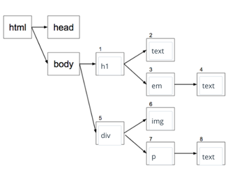
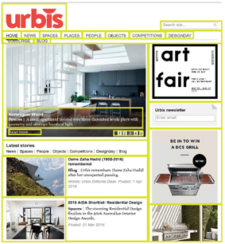

Date: 3 April.
Updated: 26 May 2016
HTML [Hypertext Markup Language]
HTML is like the stage manager organising an act with a human pyramid. HTML is a set of mark-up symbols or codes as elements or tags that once inserted in a file will display on a web browser. As it defines the parts of the documents and the way a document is accessed and manipulated, so it is organised so the strong foundations are at the base of the construction.
CSS [Cascading Style Sheets]
CSS describe how the HTML elements are to be displayed. It can control the layout in multiple areas all at once. So for example, to use the construction analogy CSS is how the structure will look and finally appear. For the acrobatic formation, it could include the costumes, props and embellishments that make the final act. It would also include the stage, as the environment it sits in - as this is just as important. And like many web projects there is a certain flow of production, for the human pyramid it is built up from the ground. But for web development their is a 'waterfall' method of project production and for code, as it cascades downwards in a sequential 'normal flow'.

The DOM [Document Object Model]
The DOM is how all this comes together, and all the parts that are needed to interpret the information to make the structure. The DOM would be like all the finished staged production after being built through the rehersal stages. The final performance would include the lighting manager, the music, the stage manager etc. It takes the relevant information and facilitates the structure to come together in a format the client or viewer requires it. The DOM is defining the logical structure of documents and the way a document is accessed and manipulated. Just like the DOM interpreting files for the browser, the stage manager combines schedules, timing, and various tasks to realise the final production.

What is boxifying design and the box model?
A website design is divided into box elements, every element is a box, even circles and ovals. Designs include a rectangular shape for all different the elements such as: headings, images, body text and footers etc. All the boxes have a content area which is surrounded by padding, borders and margins. So website design is based on the box model
and the way we arrange these boxes is built by the underlying the structural code.